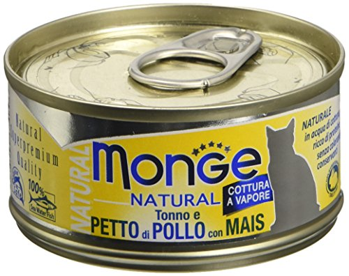
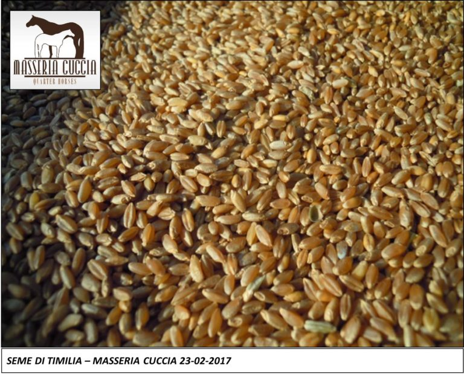
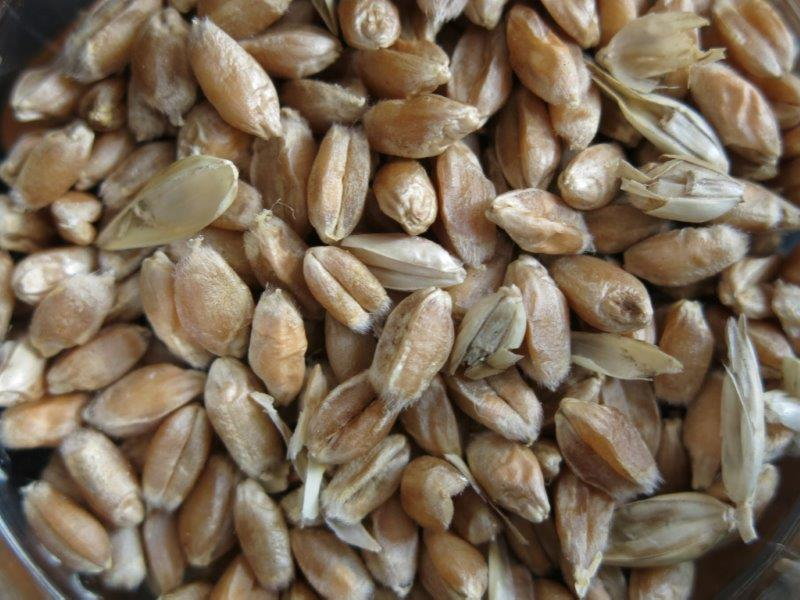
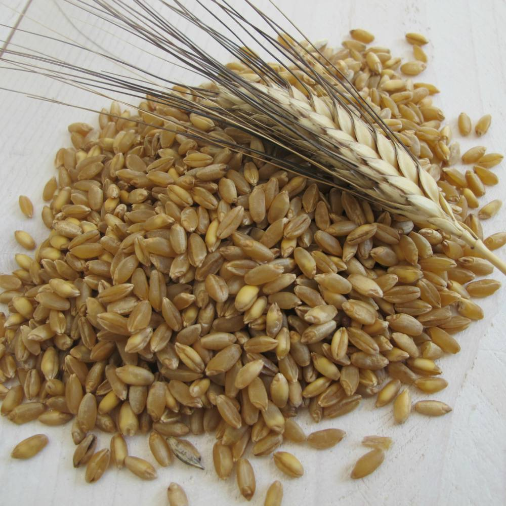
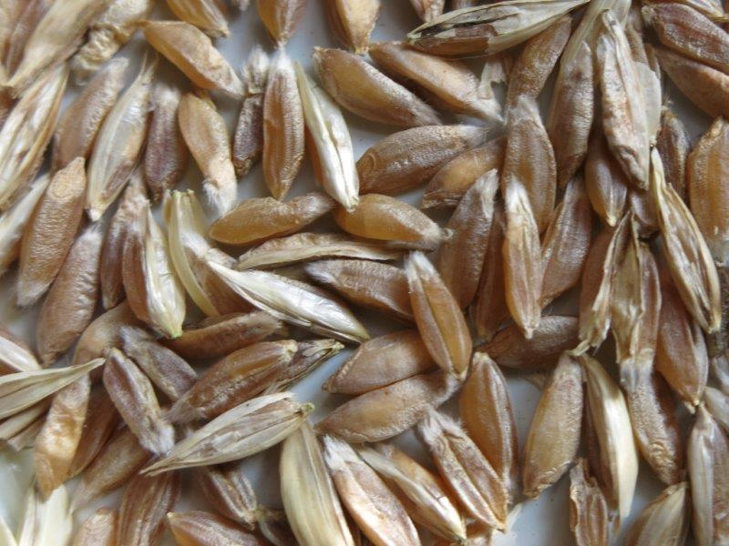
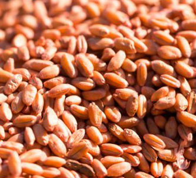
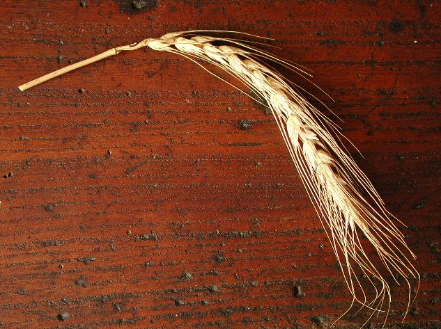
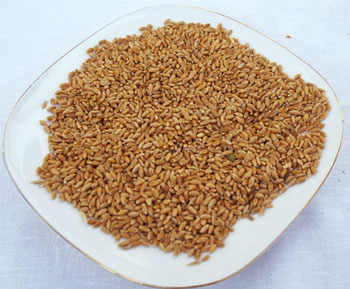
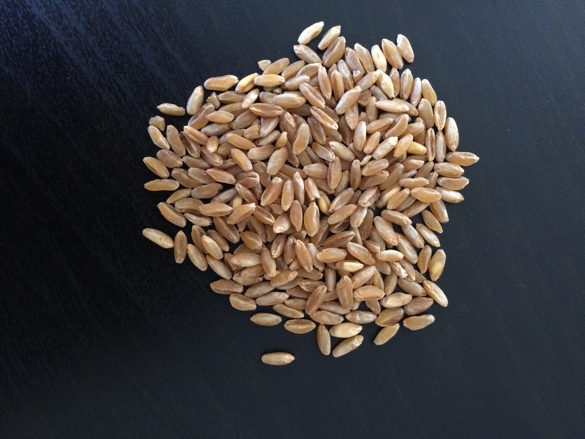
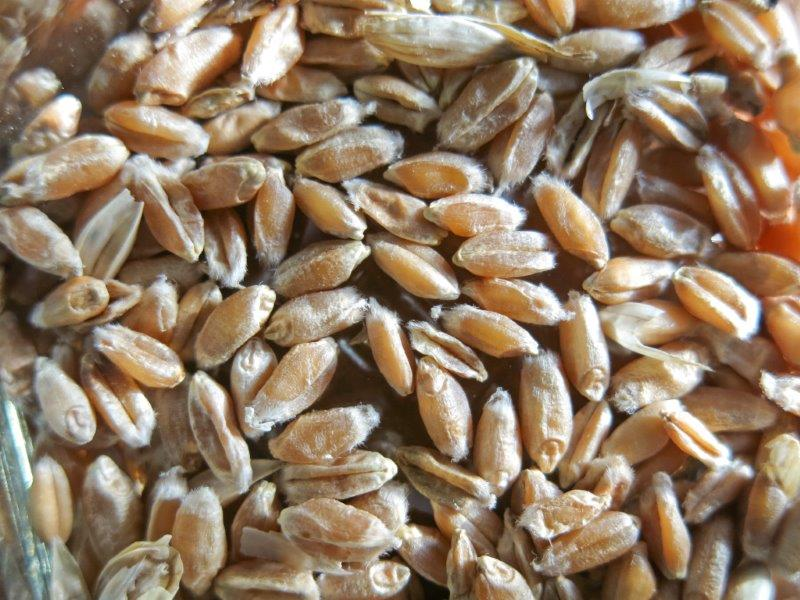

.jpg)
Durante gli anni ’70 il grano duro ha subito una spinta genetica notevole, che da un lato lo ha reso pi`u basso - quindi pi`u difficilmente abbattibile e pi`u facilmente raccoglibile dai macchinari moderni -, dall’altro lo ha reso pi`u produttivo per la produzione di farine e derivati. La nostra azienda ha tuttavia deciso di seguire una strada diversa: ricerche importanti hanno visto come il grano duro antico offra notevoli vantaggi nutrizionali. Infatti il glutine in esso contenuto ha una struttura diversa dagli altri e pi`u facilmente digeribile, oltre ad avere una composizione proteica migliore ed un impatto glicemico inferiore. Non sono poi da trascurare i loro importanti contributi alla biodiversit`a e all’ambiente. Va infatti considerato che i grani di antiche variet`a hanno meno bisogno di concimazioni, altrimenti si sviluppano anche troppo in altezza; essendo belli svettanti, sono pi`u difficilmente attaccabili dalle infestanti, rendendo superflui i diserbanti. Insomma, si prestano ottimamente alla coltivazione biologica.
Grano duro siciliano gi`a citato in epoca greca. `E particolarmente apprezzato per la panificazione grazie al gusto dolce e al colore carico della farina. Se ne ricava tra l’altro il celebre pane Nero di Castelvetrano.
Nato nel 1922 nell’Aretino, `e un grano tenero derivato dal Gentil Rosso (vedi). Vanta gusto e aroma intensi.
Nato con l’intento di aumentare la produzione di frumento per la crescente popolazione, deve il nome al senatore abruzzese Raffaele Cappelli, nella cui tenuta il genetista Nazareno Strampelli comp`ı gli incroci che lo portarono, dopo un’ibridazione con una cultivar tunisina, a produrre un grano di maggiore resa. Non per questo il Cappelli perse sotto il profilo nutrizionale e della digeribilità.
Proteico e ricco di antiossidanti, appartiene davvero a un’antica cultivar ed era il preferito dagli antichi romani.
Nato in Toscana a metà ’800, questo grano tenero ha spighe rossicce da cui si ricava una farina di colore carico. `E ben fornito di minerali e proteine.
Originario dell’omonima citt`a laziale, era gi`a coltivato nel ’600, ma ebbe grande diffusione in Italia nell’800.
Grano tenero diffuso in Abruzzo gi`a nel XVI secolo.
Pregiata variet`a di grano duro siciliano, deve il suo nome al colore rosso-dorato delle spighe. Ben digeribile, `e molto apprezzato per la panificazione.
Grano tenero originario della Toscana. Sottoposta ad analisi dall’universit`a di Bologna, la farina ha mostrato un tenore di glutine dello 0,9% contro il 14% della media delle attuali cultivar, rispetto alle quali ha pure un miglior contenuto di antiossidanti, proteine totali, minerali.

Da pensare a cosa scriverci